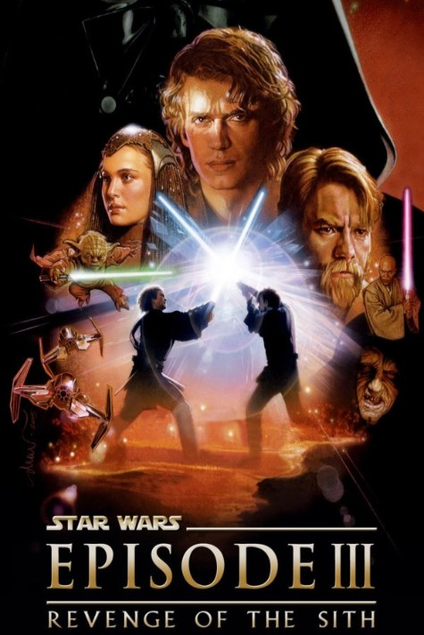

Chewbacca
Chewbacca est un personnage de Star Wars. Légendaire guerrier Wookiee et copilote du Faucon Millenium aux côtés du légendaire contrebandier Han Solo, Chewbacca fait partie du noyau de rebelles qui ont restauré la liberté dans la galaxie. Connu pour se mettre très facilement en colère et sa précision à l'arbalète, Chewbacca a aussi un grand cœur et fait preuve d'une loyauté indéfectible envers ses amis. Chewbacca est joué par Peter Mayhew dans les épisodes IV (1977), V (1980), VI (1983), et III (2005). Joonas Suotamo partage le rôle avec Peter pour l'épisode VII (2015) puis le reprend totalement pour l'épisode VIII (2017), le spin-off Solo: A Star Wars Story (2018) et l'épisode IX (2019) 3.

| Apparaît dans : | La Revanche des Sith, Solo, Un nouvel espoir, L'Empire contre-attaque, Le Retour du Jedi, Le Réveil de la Force, Les Derniers Jedi, L'Ascension de Skywalker |
|---|---|
| Première apparition : | |
| Affiliations : | Alliance rebelle |
| Race : | Wookiee |
| Genre : | Masculin |
| Planète d'origine : | Kashyyyk |
| Métier : | Guerrier, Mécanicien, Pilote, Contrebandier |
| Côté de la force : | Lumineux |
Rôle dans l'histoire
Chewbacca apparaît dans le 22e épisode de la troisième saison de la série Star Wars: L'Attaque des Clones. Il a été enlevé et rejeté sur une planète forestière, pour y être chassé, par des chasseurs trandoshans aux côtés d'Ahsoka Tano et de deux autres jeunes Jedi, qui parviennent d'ailleurs à triompher de leurs poursuivants grâce à la grande force physique du Wookiee et grâce à l'émetteur construit par celui-ci afin de contacter Kashyyyk. Les Wookiees vinrent secourir Chewbacca et les padawans. Ensuite, Chewbacca rencontre pour la première fois des Chevaliers Jedi (Plo Koon, Anakin Skywalker et Obi-Wan Kenobi) pour leur ramener les padawans.
En compagnie de Tarfful, Chewbacca aide Yoda, Luminara Unduli et sa légion, la 41e, dans la défense de Kashyyyk. Il permet également Yoda à s'enfuir lorsque Dark Sidious ordonne l'élimination de tous les Jedi.
 general grievious
general grievious
 padme
padme